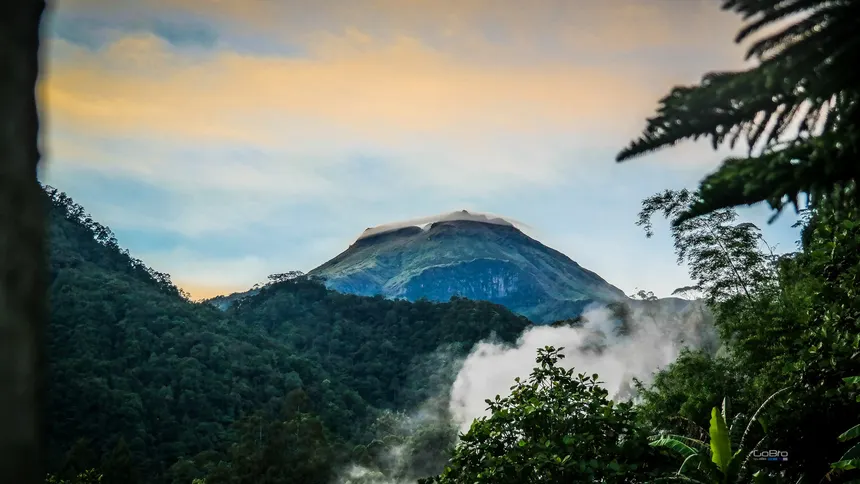

Nationwide
Harbor Life
Archival and new footage of fishing boats, ferries and dockside markets, showing how maritime trade still shapes coastal towns.
Read the historyMindanao, Zamboanga City
A seventeenth-century Spanish fortress on the shore of Zamboanga that is now a shrine and museum.
Fort Pilar stands on the shore of Zamboanga, where Mindanao faces the Sulu Sea. It was built by the Spanish to guard the southern frontier of their colony.
Today it is both a museum and a shrine, with a chapel to Our Lady of the Pilar that draws worshippers of many backgrounds.
In the 1600s Zamboanga was a crossing point for ships and traders in the south. The Spanish wanted a base from which to defend the Visayas from raids and to compete with other powers, including the Dutch. The Jesuit priest and architect Melchor de Vera designed the fort, and construction began in 1635.
The first fort was built of stone, with thick walls and bastions set at its corners.
In the 1660s Spain pulled its soldiers out of Zamboanga to defend Manila from a feared Chinese attack, and the fort was left empty. The Spanish returned in 1718 and rebuilt it. It remained a military post until the end of the Spanish period, and later served American and Philippine forces.
In the twentieth century the old fort became a place of worship and a museum, and a shrine to the Virgin of the Pilar was set up inside its walls.
Father Melchor de Vera designs and begins building the fort.
Troops are called to Manila, and the fort is left empty.
Spain re-establishes the garrison and rebuilds the fort.
The fort serves later governments and eventually becomes a museum and shrine.
Fort Pilar is a place where Zamboanga's history is on view, including the story of the Spanish frontier and the many communities that live in the city today.
Archival and new footage of fishing boats, ferries and dockside markets, showing how maritime trade still shapes coastal towns.
Read the history
MindanaoStanding at 2,954 meters, Mount Apo is the highest peak in the Philippines and the most famous natural landmark in Mindanao.
Read the historyA forested mountain range with a rare pygmy forest, home to species that live nowhere else on Earth.
Read the history